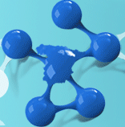
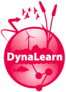

Scientific creativity and innovation represent the beating heart of European growth at a time of rapid technological change. Dr Inventor is built on the vision that technologies have great potential to supplement human ingenuity in science by overcoming the limitations that people suffer in pursuing scientific discovery. It presents an original system that will provide inspiration for scientific creativity by utilising the rich presence of web-based research resources.
Wf4Ever will propose and develop a software architecture and reference implementation for the preservation and efficient retrieval and reuse of digital libraries of scientific workflows, addressing some of the biggest challenges standing in data-intensive Science:
CIUDAD2020 is an Impronta Project whose aims are twofold: to push forward the areas of energy efficiency, human behaviour, environmental sustainability, transport and mobility, along with the Internet of the future and the Internet of Things; and to design the city of the future, which should be sustainable, intelligent and efficient.
The READY4SmartCities (http://www.ready4smartcities.eu/) project intends to increase awareness and interoperability for the adoption of ICT and semantic technologies in energy system to obtain a reduction of energy consumption and CO2 emission at smart cities communities level through innovative relying on RTD and innovation outcomes and ICT-based solutions.
The goal of this project is to develop an open source Application Lifecycle Management platform that automates and supports the whole software development lifecycle by integrating the best existing open source tools.
La anotación de fichas técnicas de medicamentos con SNOMED-CT es un proyecto de colaboración con la Agencia Española de Medicamentos y Productos Sanitarios (AEMPS). El objetivo global del proyecto es desarrollar un sistema capaz de extraer las enfermedades de las indicaciones terapéuticas de las fichas técnicas de medicamentos (enfermedades para las que el medicamento ha sido prescrito) y buscar la correspondencia (mapping) con la terminología médica SNOMED-CT. La anotación de enfermedades mediante el proceso de mapping con SNOMED-CT permitirá la representación del contenido de las fichas técnicas para su interpretación automática e inequívoca entre sistemas distintos, de forma precisa y en diferentes idiomas, facilitando así el uso de la información relevante para la toma de decisiones clínicas.
OTALEX is financed by the European programme INTERREGIII A, and its objective is to study and show the reality of a territory, which is composed of the Alentejo region in Portugal and the Extremadura region in Spain, conventionally separated by an administrative frontier but joined by their physical, environmental, social and economic features. It is about rural spaces of low demographic density where natural and cultural resources together with environmental quality represent its basic attraction.
MONNET (Multilingual Ontologies for Networked Knowledge) aims at providing a semantics-based solution for integrated information access across language barriers, which is of growing importance to industry and governmental institutions, as exemplified by Monnet use cases. A key solution to this problem is to deal with information at the semantic level, i.e. by abstracting away over language and form, allowing for more advanced and uniform: i) integration, ii) aggregation, iii) querying and iv) presentation of information across languages.
Storage research increasingly gains importance based on the tremendous need for storage capacity and I/O performance. Over the past years, several trends have considerably changed the design of storage systems, starting from new storage media over the widespread use of storage area networks, up to grid and cloud storage concepts. Furthermore, to achieve cost efficiency, storage systems are increasingly assembled from commodity components. Thus, we are in the middle of an evolution towards a new storage architecture made of many decentralized commodity components with increased processing and communication capabilities, which requires the introduction of new concepts to benefit from the resulting architectural opportunities.
The NeOn project (Lifecycle support for networked ontologies - FP6-027595) aimed to advance the state of the art in Ontology Engineering and Semantic Web technologies. The main goal was to provide effective methodological and tool support for developing a new breed of semantic applications, able to exploit effectively the large amounts of information and data, which are now available on the Web.
Knowledge Web is a 4 year Network of Excellence. Supporting the transition process of Ontology technology from Academia to Industry is the main and major goal of Knowledge Web. The mission of Knowledge Web is to strengthen the European industry and service providers in one of the most important areas of current computer technology: Semantic Web enabled E-work and E-commerce. The project concentrates its efforts around the outreach of this technology to industry. Naturally, this includes education and research efforts to ensure the durability of impact and support of industry.
BUSCAMEDIA (Hacia una adaptación semántica de medios digitales multirredmultiterminal) aims to provide a real multimedia semantic search engine, which is based on a new ontology defined within the project (the M3 ontology: multilingual, multidomain, and multimedia). The multimedia semantic search engine will adapt dynamically to any network, terminal, context and user (both professional user and end-user).
In the past years, several research groups in Spain have begun working in the area of Linked Data. These groups are involved separately in both in major initiatives and European consortia, as well as in collaborations with companies and national and international institutions.
The goal of the SEEMP (Single European Employment Market-Place) project is to design and implement in a prototypal way an interoperability architecture for public e-Employment services which encompasses cross-governmental business and decisional processes, interoperability and reconciliation of local professional profiles and taxonomies, semantically enabled web services for distributed knowledge access and sharing.
In this project, an application has been developed that provides user-centered geomatic information and services, anywhere anytime, for pilgrims in the “Camino de Santiago”. The application supports mobile, dynamic and context-aware access and interaction with a range of geographical and application-specific resources and services, with the support of the databases provided by Instituto Geográfico Nacional (IGN).
UpGrid, "Ubiquitous Access to Audio/Video contents based on UPnP, was a project funded by the Spanish Ministry of Science and Innovation under the AVANZA Program for years 2008, 2009 and 2010. Participants of this projects are Telefónica R & D (coordinator), iSOCO and the OEG group (Universidad Politécnica de Madrid, UPM).
The objective of the project called "Semantic Services: Technological Infrastructure of Semantic Services for the Semantic Web" was to build a network of distributed and interoperable semantic services with which to create more complex services. These services are available in Semantic Web Services libraries and can be invoked by any other system (semantic portals, software agents, etc.).
The project’s mission is to provide the basis for the creation of a Linguistic Linked Data cloud that can support content analytics tasks of unstructured multilingual cross-media content. By achieving this goal, LIDER will impact on the ease and efficiency with which Linguistic Linked Data will be exploited in content analytics processes.
PlanetData is a network of Excellence whose aim is to establish a sustainable European community of researchers that supports organizations in exposing their data in new and useful ways, increasing the ability of organizations to effectively and efficiently make sense out of the enormous amounts of data continuously published online, including structured and unstructured data, data streams, (micro) blog posts, digital archives, eScience resources, public sector data sets, and the Linked Open Data Cloud.
BabelData will develop methods, techniques and algorithms to provide a set of services able to create, manage and reuse multilingual ontologies and data.
In the development of the Semantic Web of the future, multilinguality has emerged as one of the major challenges. Despite considering knowledge processing on the Semantic Web as being inherently independent of any natural language, the interaction between humans and machines will remain language-dependent.
In this project we will create a platform that will integrate new methods, techniques and tools to allow the ontology-based integration of heterogeneous scientific data sources, reusing the advances done in this area during the last two decades and incorporating new types of data sources coming from social networks of researchers, from the Linked Data cloud and from sensor networks.
The main objective of SemsorGrid4Env is to specify, design, implement, evaluate and deploy a service-oriented architecture and middleware which allows application developers to build open large-scale semantic-based sensor network applications for environmental management. Such architecture and middleware will enable the rapid development of thin applications (e.g., mashups) that require real-world real-time data coming from heterogeneous sensor networks,
Conceptual knowledge of system's behaviour is crucial for society to understand and successfully interact with its environment. Acquiring this expertise is therefore a valuable aspect of science education. DynaLearn (Engaging and informed tools for learning conceptual system knowledge) aims to support the acquisition of conceptual knowledge in the context of environmental sciences learning, by combining:
The goal of the SEALS project is to provide an independent, open, scalable, extensible and sustainable infrastructure (the SEALS Platform) that allows the remote evaluation of semantic technologies thereby providing an objective comparison of the different existing semantic technologies. This will allow researchers and users to effectively compare the available technologies, helping them to select appropriate technologies and advancing the state of the art through continuous evaluation.
The SEALS Platform will provide an integrated set of semantic technology evaluation services and test suites. They will be used in two public and worldwide evaluation campaigns. The results of these evaluation campaigns will be used to create semantic technology roadmaps identifying sets of efficient and compatible tools for developing large-scale semantic applications.
ADMIRE (Advanced Data Mining and Integration Research for Europe) is motivated by the difficulty of extracting meaningful information of data from multiple heterogeneous and distributed large-scale data resources.The project has proposed an architecture for large-scale data mining and integration, which is focused on separating concerns between domain experts, data analysis experts and data-intensive engineers, a language (DISPEL) that can be used to express those data mining and integration workflows across those user profiles, and the necessary tools and platforms to use this language according to the architecture.
One of the greatest challenges faced in Grid Computing concerns the ability to explicitly share and deploy knowledge to be used for the development of innovative Grid infrastructure, and for Grid applications - the Semantic Grid. To address this challenge the OntoGrid project produced technological infrastructure for the rapid prototyping and development of knowledge-intensive distributed open services for the Semantic Grid. The results of this project were aimed at developing grid systems that optimized cross-process, cross-company and cross-industry collaboration, an achievement that OntoGrid made by adopting a use case-guided development and evaluation strategy based on two test case applications of differing, yet stereotypical, Grid characterization.
mIO! (Tecnologías para prestar servicios en movilidad en el futuro universo inteligente) aims to provide technologies capable of supplying ubiquitous services in an intelligent environment. These technologies will be able to adapt themselves to everybody and to its context. Such technologies will use as the main interaction basis the mobile terminal with both (micro)-services provided by companies and (micro)-services created and provided by the mobile users.
Esperonto Services (Application Service Provision of Semantic Annotation, Aggregation, Indexing and Routing of Textual, Multimedia, and Multilingual Web Content - IST-2001-34373) aimed to overcome the problem of information overload by adding meaning to the Web, which can be exploited by software agents to whom people and businesses can delegate tasks.
España Virtual is a R&D project, supported by CDTI within the Ingenio 2010 program. It is oriented to architecture definition, protocols and future 3D Internet standards and is specifically focused on 3D visualization, virtual worlds, user interactions and the introduction of semantic capabilities.
España Virtual has as its aim to lay the foundations of a future Virtual ecosystemEspaña with multimedia content and interactive services, which group together the technology known as Web 2.0 and its social, semantic and geographical aspects (orthophotos, satellite image, digital elevation models, 3D buildings ...) into a new generation of 3D tools to interact with the virtual world.
Autores 3.0 (Registro de Propiedad Intelectual Online con Tecnología Semántica - Intellectual Property Online Registry using Semantic Technology) aims to research and develop an information system to create an intellectual property online registry (of original works) based on semantic technology. This registry (web service) will provide valuable information regarding intellectual property rights of the contents over the Internet and will make possible the emergence of a digital community around contents creation and diffusion.
This project aims to develop tools that permit the legal document to be modelled in electronic support and be semantically retrieved to facilitate the government-citizen document transaction. The domain selected is related to the Real-estate transaction market and offers sufficient juridical guarantees.
The study will include the characteristics of the juridical procedures in the knowledge society taking as a reference the procedures followed by the local administration for the real-estate transactions.
TSIMON es un proyecto de carácter demostrativo, comenzado en Enero de 2014, con cuatro pilotos a gran escala en Madrid, Lisboa, Parma y Reading.
El proyecto SIMON está orientado a promover la vida independiente y la participación en sociedad de las personas con movilidad reducida. Sus dos objetivos principales son: por un lado, la modernización de tarjetas de aparcamiento, y por otro lado la implementación de una aplicación móvil para dar soporte a ciudadanos con discapacidad en el uso de su tarjeta de estacionamiento y de facilitar el uso del transporte público y privado.
")
")
 Wf4Ever will propose and develop a software architecture and reference implementation for the preservation and efficient retrieval and reuse of digital libraries of scientific workflows, addressing some of the biggest challenges standing in data-intensive Science:
Wf4Ever will propose and develop a software architecture and reference implementation for the preservation and efficient retrieval and reuse of digital libraries of scientific workflows, addressing some of the biggest challenges standing in data-intensive Science:
 Storage research increasingly gains importance based on the tremendous need for storage capacity and I/O performance. Over the past years, several trends have considerably changed the design of storage systems, starting from new storage media over the widespread use of storage area networks, up to grid and cloud storage concepts. Furthermore, to achieve cost efficiency, storage systems are increasingly assembled from commodity components. Thus, we are in the middle of an evolution towards a new storage architecture made of many decentralized commodity components with increased processing and communication capabilities, which requires the introduction of new concepts to benefit from the resulting architectural opportunities.
Storage research increasingly gains importance based on the tremendous need for storage capacity and I/O performance. Over the past years, several trends have considerably changed the design of storage systems, starting from new storage media over the widespread use of storage area networks, up to grid and cloud storage concepts. Furthermore, to achieve cost efficiency, storage systems are increasingly assembled from commodity components. Thus, we are in the middle of an evolution towards a new storage architecture made of many decentralized commodity components with increased processing and communication capabilities, which requires the introduction of new concepts to benefit from the resulting architectural opportunities. The NeOn project (Lifecycle support for networked ontologies - FP6-027595) aimed to advance the state of the art in Ontology Engineering and Semantic Web technologies. The main goal was to provide effective methodological and tool support for developing a new breed of semantic applications, able to exploit effectively the large amounts of information and data, which are now available on the Web.
The NeOn project (Lifecycle support for networked ontologies - FP6-027595) aimed to advance the state of the art in Ontology Engineering and Semantic Web technologies. The main goal was to provide effective methodological and tool support for developing a new breed of semantic applications, able to exploit effectively the large amounts of information and data, which are now available on the Web. UpGrid, "Ubiquitous Access to Audio/Video contents based on UPnP, was a project funded by the Spanish Ministry of Science and Innovation under the AVANZA Program for years 2008, 2009 and 2010. Participants of this projects are Telefónica R & D (coordinator), iSOCO and the OEG group (Universidad Politécnica de Madrid, UPM).
UpGrid, "Ubiquitous Access to Audio/Video contents based on UPnP, was a project funded by the Spanish Ministry of Science and Innovation under the AVANZA Program for years 2008, 2009 and 2010. Participants of this projects are Telefónica R & D (coordinator), iSOCO and the OEG group (Universidad Politécnica de Madrid, UPM). The main objective of SemsorGrid4Env is to specify, design, implement, evaluate and deploy a service-oriented architecture and middleware which allows application developers to build open large-scale semantic-based sensor network applications for environmental management. Such architecture and middleware will enable the rapid development of thin applications (e.g., mashups) that require real-world real-time data coming from heterogeneous sensor networks,
The main objective of SemsorGrid4Env is to specify, design, implement, evaluate and deploy a service-oriented architecture and middleware which allows application developers to build open large-scale semantic-based sensor network applications for environmental management. Such architecture and middleware will enable the rapid development of thin applications (e.g., mashups) that require real-world real-time data coming from heterogeneous sensor networks,
 The goal of the SEALS project is to provide an independent, open, scalable, extensible and sustainable infrastructure (the SEALS Platform) that allows the remote evaluation of semantic technologies thereby providing an objective comparison of the different existing semantic technologies. This will allow researchers and users to effectively compare the available technologies, helping them to select appropriate technologies and advancing the state of the art through continuous evaluation.
The goal of the SEALS project is to provide an independent, open, scalable, extensible and sustainable infrastructure (the SEALS Platform) that allows the remote evaluation of semantic technologies thereby providing an objective comparison of the different existing semantic technologies. This will allow researchers and users to effectively compare the available technologies, helping them to select appropriate technologies and advancing the state of the art through continuous evaluation. The evolution of the Web comes with three big social and technological trends:
The evolution of the Web comes with three big social and technological trends: One of the greatest challenges faced in Grid Computing concerns the ability to explicitly share and deploy knowledge to be used for the development of innovative Grid infrastructure, and for Grid applications - the Semantic Grid. To address this challenge the OntoGrid project produced technological infrastructure for the rapid prototyping and development of knowledge-intensive distributed open services for the Semantic Grid. The results of this project were aimed at developing grid systems that optimized cross-process, cross-company and cross-industry collaboration, an achievement that OntoGrid made by adopting a use case-guided development and evaluation strategy based on two test case applications of differing, yet stereotypical, Grid characterization.
One of the greatest challenges faced in Grid Computing concerns the ability to explicitly share and deploy knowledge to be used for the development of innovative Grid infrastructure, and for Grid applications - the Semantic Grid. To address this challenge the OntoGrid project produced technological infrastructure for the rapid prototyping and development of knowledge-intensive distributed open services for the Semantic Grid. The results of this project were aimed at developing grid systems that optimized cross-process, cross-company and cross-industry collaboration, an achievement that OntoGrid made by adopting a use case-guided development and evaluation strategy based on two test case applications of differing, yet stereotypical, Grid characterization.
 Esperonto Services (Application Service Provision of Semantic Annotation, Aggregation, Indexing and Routing of Textual, Multimedia, and Multilingual Web Content - IST-2001-34373) aimed to overcome the problem of information overload by adding meaning to the Web, which can be exploited by software agents to whom people and businesses can delegate tasks.
Esperonto Services (Application Service Provision of Semantic Annotation, Aggregation, Indexing and Routing of Textual, Multimedia, and Multilingual Web Content - IST-2001-34373) aimed to overcome the problem of information overload by adding meaning to the Web, which can be exploited by software agents to whom people and businesses can delegate tasks. This project aims to develop tools that permit the legal document to be modelled in electronic support and be semantically retrieved to facilitate the government-citizen document transaction. The domain selected is related to the Real-estate transaction market and offers sufficient juridical guarantees.
This project aims to develop tools that permit the legal document to be modelled in electronic support and be semantically retrieved to facilitate the government-citizen document transaction. The domain selected is related to the Real-estate transaction market and offers sufficient juridical guarantees.